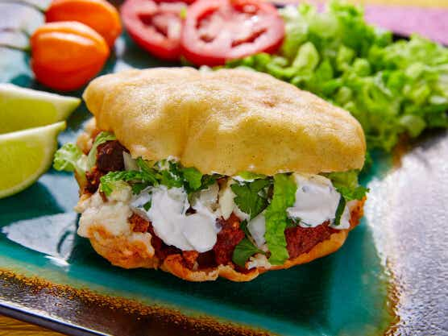
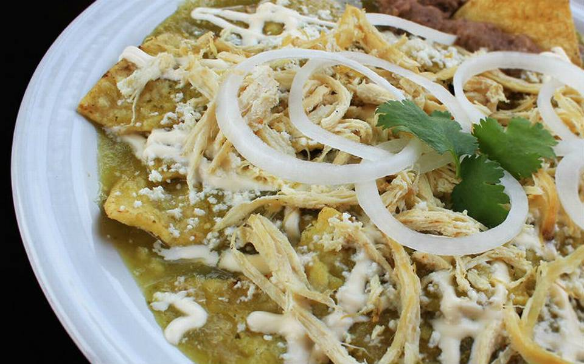
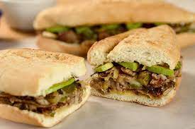

Tacos de tortilla de harina de gran tamaño rellenos de machaca y frijol.
Coyotas Una especie de empanada de harina rellena de dulce o mermelada. Gallina pinta Caldo hecho a base de carne, con maíz nixtamal y frijoles. Caguamanta Caldo de carne de mantarraya con verduras.
TACOS
El taco es una preparación culinaria muy popular en México que consiste en una tortilla, generalmente de maíz, que se dobla para contener dentro diversos ingredientes y algún tipo de salsa.

GORDITAS
Las gorditas son un platillo mexicano elaborado a base de masa de maíz o trigo, rellenas de chicharrón, frijol u otros ingredientes diversos.

CHILAQUILES
Los chilaquiles son un plato típico mexicano elaborado a base de tortillas cortadas, fritas o tostadas, que se cocinan en una salsa picante que es roja o verde dependiendo del tipo de chile usado.

TORTAS
En la gastronomía mexicana una torta es un alimento que se elabora con un pan (generalmente una telera, pero también puede ser con bolillo o con birote), el cual se parte por la mitad y se rellena de diferentes ingredientes.